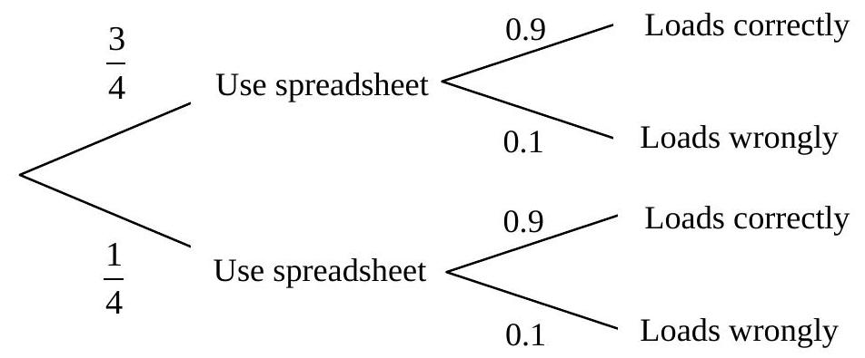

Chapter 4 : Set Notation Representation And Probability (Continued)
4.13 Tree Diagrams (Continued)
Example:
If the probability that you will use a particular spreadsheet system is 3/4 and the probability that the software loads correctly is 0.9, there are 4 possible results when you try to use that spreadsheet. Draw the appropriate probability tree to illustrate this situation and calculate the probability of each of the 4 possible outcomes.
Solution:
P(Use spreadsheet, load correctly) = $\frac{3}{4} \times 0.9 = 0.675$
P(Use spreadsheet, load wrongly) = $\frac{3}{4} \times 0.1 = 0.075$
P(Use others, load correctly) = $\frac{1}{4} \times 0.9 = 0.225$
P(Use others, load wrongly) = $\frac{1}{4} \times 0.1 = 0.025$
Total Probability = 0.675 + 0.075 + 0.225 + 0.025 = 1.000
Example:
Produce a probability tree to show the eight outcomes of the experiment including the three events that:
- The company database needs updating with a probability of 1/4.
- The database manager is in a meeting with a probability of 1/4.
- The database maintainer is on holiday with a probability of 1/4.
(Hint: Check that the probabilities of these eight outcomes as shown on the tree do indeed total 1).
Points to Remember (Probability)
Definition of probability
Probability of an event E
Range of Probability
$0 \leq P(E) \leq 1$
When P(E) = 0, it means that event E is not possible.
When P(E) = 1, it means that event E is certain.
The occurrence of an event can be treated as success, otherwise a failure.
- P(Success) + P(Failure) = 1
Venn diagram from set theory, histogram or cumulative frequency diagram from a statistical frequency distribution; binomial distribution, they can form probability spaces on which probability of relevant events can be evaluated.
Two cases of combined events
- Probability of one of the mutually exclusive events will occur = $P_1 + P_2 + P_3 + \ldots + P_n$
- Probability of ALL of the independent events will occur = $P_1 \times P_2 \times P_3 \times \ldots \times P_n$
Tree diagrams are useful to show all possible outcomes of a sequence of events, that helps determine the probability of a combination of events.
4.14 Past Years Questions (Probability)
17. A computer generates random odd integers from 1 to 9 inclusive. If three numbers are generated, calculate the probability that:
- All three numbers are three [2]
- At least two of the numbers are five
From a production run of 10,000 RAM chips, 4% of which are defective, one chip is selected at random
- What is the probability that the chip is defective? [1]
- What is the probability that it is not defective?
There are ten numbers, from 0 to 9, in a bag. Three draws are made at random without replacement from it.
- What is the probability of having three different numbers?
- What is the probability that the sum of the three numbers is less than 4?
A prime number is an integer, greater than or equal to 2, which can only be wholly divided by 1 and by itself. A box contains numbers from 2 to 10 (both numbers inclusive). If 2 numbers are chosen at random without replacement, what is the probability that:
- Both are prime numbers?
- Neither of them is prime number?
The probability that a character transmitted is incorrect is 1/8.
- Find the probability that three characters transmitted in a row are all correct. [2]
- Find the probability that at least one of the three characters is not transmitted correctly.
A computer generates random integers from 1 to 6 inclusive. If two numbers are generated, calculate the probability that:
- Neither is a 4. [2]
- At least one of them is a 4. ..... [2]
The probability that the profits of a company will increase in any one year is 0.7.
- Draw a probability tree to show all probabilities over two years.
- Show by marking with an asterisk (*) the nodes which represent an increase in profit in just ONE of the two years.
a. A box contains three pink and five blue balls. The balls are withdrawn from the box one after another. Assuming that the balls are not replaced:
- Draw a probability tree to show the possible outcomes of three withdrawals.
- What is the probability of withdrawing pink, blue, pink balls?
- Find the probability of withdrawing at least two blue balls in three withdrawals.
- Find the probability of withdrawing three pink balls in three withdrawals.
- Assuming that the ball is replaced before the next withdrawal. Repeat all four parts in a above [8]
There are six apples and twelve oranges in a box. Three draws are made, at random, without replacement.
- Draw a probability tree to show all the possible outcomes.
- What is the probability of getting first draw an apple, second draw an orange and the third an apple again.
- What is the probability of getting all oranges from the three draws.
A box contains 15 discs, of which 3 are defective. 3 discs are drawn at random consecutively, without replacement.
- Draw a probability tree to show the possible outcomes of the above 3 draws. Use N to represent a draw of a Non-defective disc and D for a draw of a Defective disc. [8]
- Calculate the probability of drawing 2 discs which are all defective.
In a certain factory, the probability of a disc being defective is 6%.
- Draw a probability tree to show all the possible outcomes for two discs chosen at random.
- Find the probability that at least one disc from the two is defective.
a. A basket contains 8 oranges and 2 pears. The fruits are picked at random from the basket, one after another. Assuming the fruits are not replaced:
- Draw a probability tree to show the possible outcomes of three picks. [7]
- Find the probability of picking an orange, a pear and an orange in that order. [2]
- Find the probability of picking at least 2 oranges.
- Recalculate i., ii., iii. above assuming the fruits are picked with replacement.
Eleven football players hang their boots on hooks on a wall. One day, someone who has come to paint the wall takes off all the boots and throws them randomly on the floor.
- If a player picks up a boot without looking, what is the probability that it is one of his?
- If a player picks up two boots without looking, what is the probability that they are both his? [2]
- If a player picks up two boots from the original pile without looking, what is the probability that one is his and one is someone else? Give your answer in fractions, rather than as decimals. [2]
A student keeps 10 pens in a drawer. Although the pens all look the same, 2 of them have red ink, 3 of them have black ink, and the remainder have blue ink.
- The student takes two pens from the drawer at random, one after the other. Assuming that the pens are not replaced:
- Draw a probability tree to show the possible outcomes from two picks.
- Find the probability of picking both of the pens that have red ink.
- Find the probability of picking at least one pen with black ink.
- The student puts all the pens back in the drawer, and this time removes the pens, tests them, and replaces them.
- Draw a probability tree to show the possible outcomes from two picks.
- Find the probability of picking a pen with red ink on both occasions. [2]
- Find the probability of picking at least one pen with blue ink. [2]
A man throws a six-sided dice three times in a row. What is the probability that he:
- Rolls three sixes [1]
- Rolls no sixes ..... [1]
- Rolls the same number each time. ..... [1]
- Rolls different numbers each time. ..... [2]